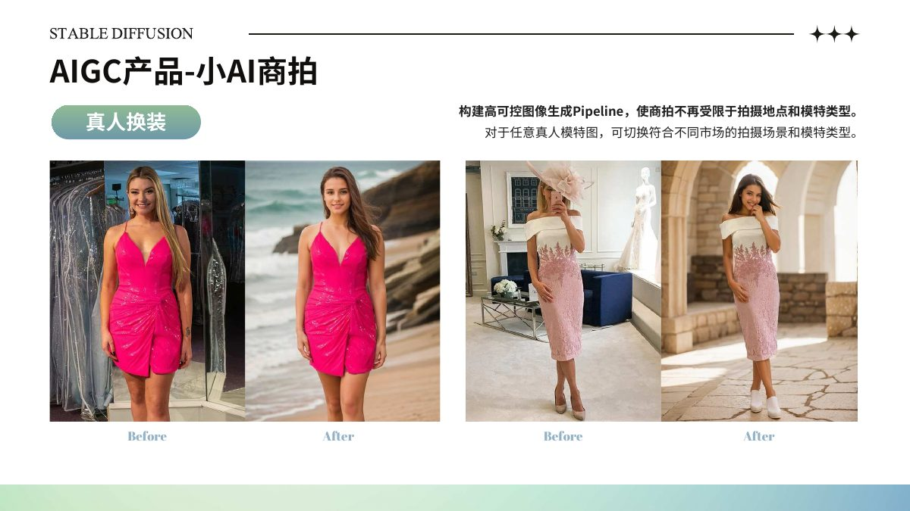
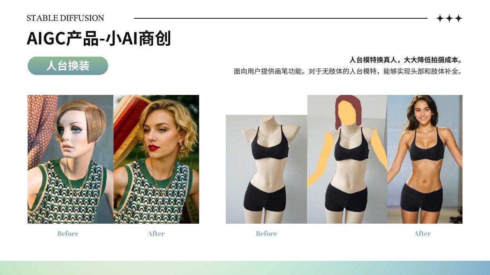
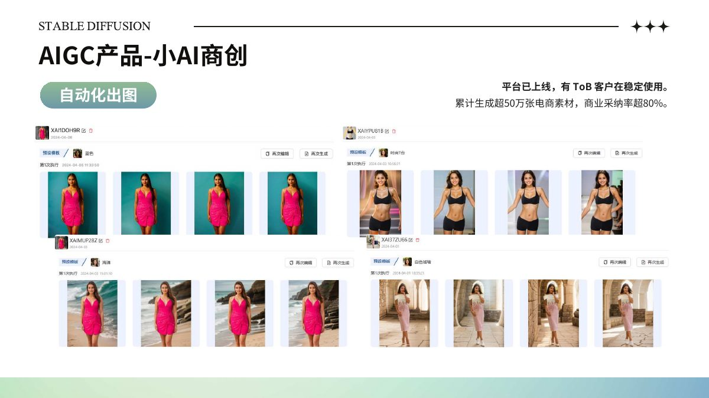
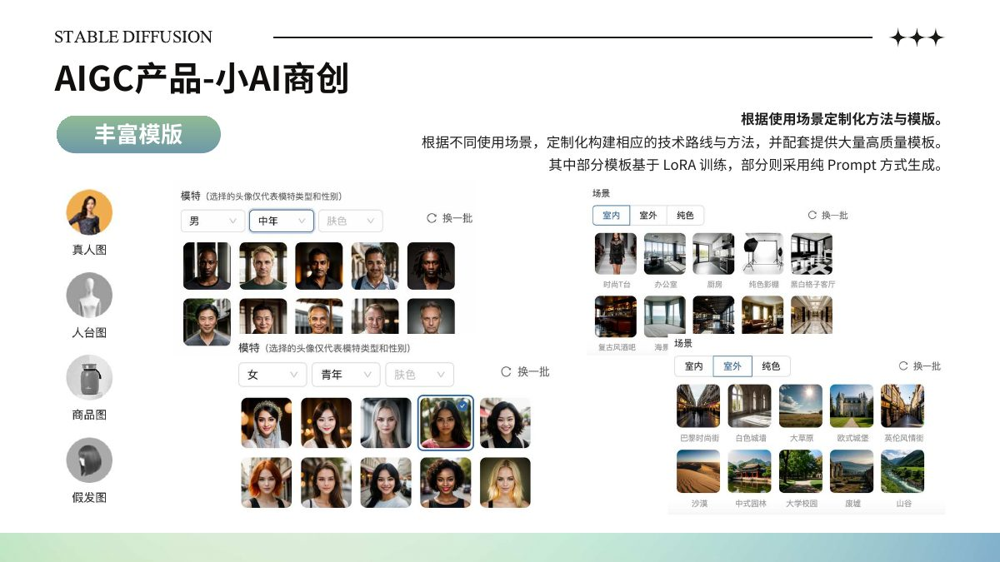
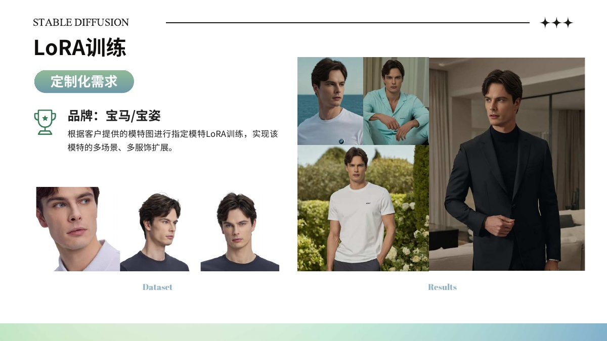

我曾主导 AIGC 电商图像生成产品“小 AI 商创”从0到1的商业化落地。项目围绕电商拍摄中的模特、场景和商品展示需求，让图片制作更灵活。
从技术路线、生成质量到实际使用场景，建立可控的图像生成流程。平台累计支撑超过 50 万 SKU 的电商图像生产。
保留商品与人物特征，切换拍摄场景或模特呈现方式。
由人台图生成完整的人物展示效果，降低重新拍摄成本。
结合Prompt、ControlNet 与 LoRA 等技术方式，适配不同品牌和商品需求。
项目案例展示了从原始素材到生成结果的变化。

通过更换场景或模特，扩展同一模特图的商品展示方式。点击看大图 ↗

由人台服装图生成人物试穿展示。点击看大图 ↗

将生成能力组织成可供实际业务使用的产品流程。点击看大图 ↗

根据不同商品和市场需要，提供更丰富、一键式的选择。点击看大图 ↗

在指定模特基础上扩展不同服装和场景。点击看大图 ↗